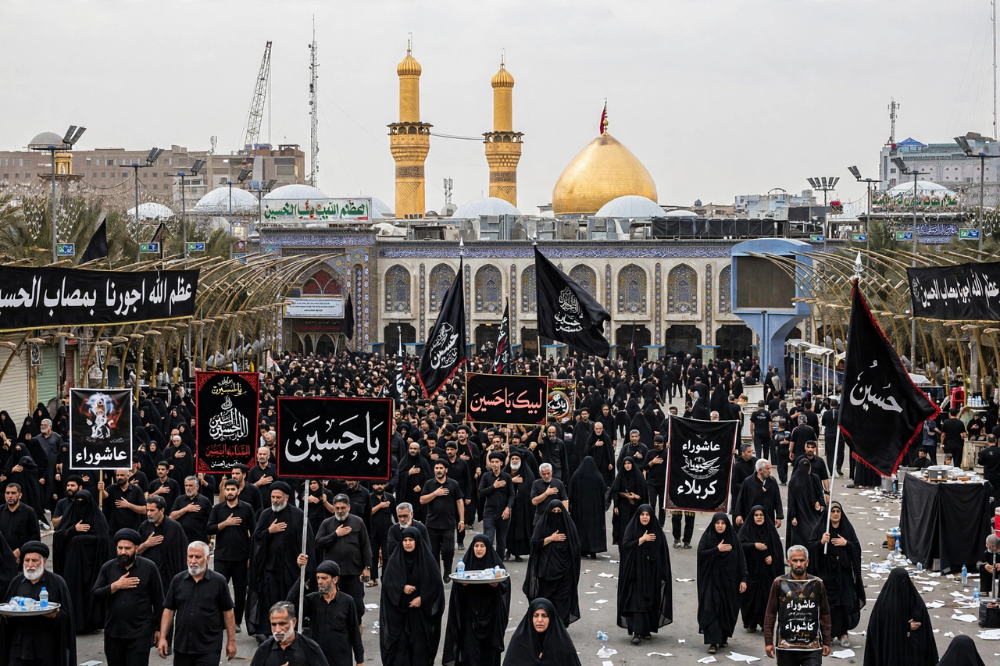

Ashura is a day of commemoration in Islam observed on the 10th day of Muharram, the first month of the Islamic calendar. For Shia Muslims it marks the martyrdom of Husayn ibn Ali at the Battle of Karbala in 680 CE; for Sunni Muslims it also commemorates events such as Moses crossing the Red Sea.

Shia observances include mourning gatherings (majlis), processions, passion plays (ta'zieh in Iran), charity and in some communities ritual self-flagellation, which many scholars discourage. Pilgrims gather in Karbala, Iraq, in some years in the millions for Arba'in, forty days later.
Many Sunni Muslims fast on Ashura and the day before or after, following a tradition that Muhammad fasted on this day in Medina in commemoration of Moses.
For Shia Islam, Husayn's stand against Yazid I symbolises resistance to tyranny and injustice.